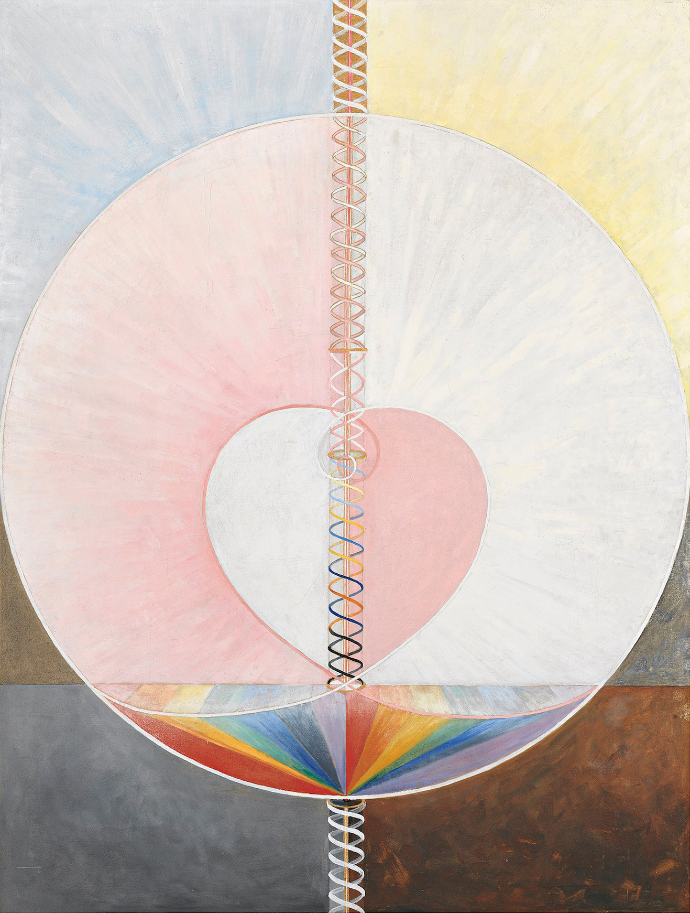

Hilma af Klint
Paintings for the Temple

The Dove, No 1, 1915
- 1906: higher being commissions af Klint to prepare an exhibit for
humankind-visual representation of how the universe is put together
- 1906-1915: af Klint begins her life’s work producing 193 paintings
known as The Paintings for the Temple
- Early works in series were created under direct guidance from spirits
but later af Klint became more self-directed in her interpretations of messages
- Paintings were to be exhibited in a circular temple to mimic a
spiritual journey; viewer would be enlightened ascending to heavens
- Paintings can also function as a map or guide of the universe